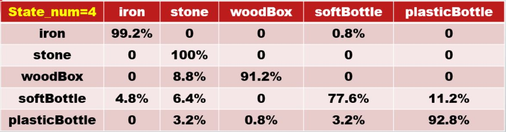

摘要
在此計畫中，我們提出一套可以判斷不同材質的方法，針對這個方法我們提出了三個主要的模組，分別是敲擊模組、音訊擷取模組、深度學習辨識模組。利用敲擊模組敲擊欲採集聲音的實驗樣本，並使用音訊擷取模組錄製樣本的敲擊聲音，透過機器學習辨識模組得到結果。敲擊模組中我們使用Arduino及電磁鐵和實驗用鐵架與滴定管夾；音訊擷取模組我們使用Python寫出一個控制Arduino釋放電磁鐵並且同時驅動指向性麥克風擷取音訊，再將音訊按照指定檔名與編號儲存至電腦中的程式、機器學習辨識模組則是將蒐集到的音訊使用Python進行前處理後以隱藏式馬可洛夫模型（Hidden-Markov Models, HMM）演算法進行辨識，再利用k-fold的方式進行交叉訓練，最終將結果簡易的顯示出來。
研究動機與目的
近年來，人工智慧成為電腦科學中突飛猛進的一門領域，語音辨識是其中的一種常見的應用，例如：音樂資訊檢索、SIRI、GOOGLE語音助理等等，於是我們就想利用這次專題的機會來研究語音辨識的相關技術，剛好食品系也提出相關的計畫：使用聲音來辨識出芋頭的好壞，由於目前並非芋頭之產季，我們就決定先從基本的演算法開始研究起。在此計畫中，我們提出一套判斷材質的方法，針對這個方法我們提出了三個主要的模組，分別是自動化敲擊模組、音訊擷取模組以及深度學習辨識模組，如下圖所示。使用我們提出的裝置敲擊實驗物品，並使用音訊擷取模組錄製不同材質的敲擊聲音，透過深度學習辨識模組得到辨識結果，最後將結果簡易的顯示出來。
開發工具
1. Arduino IDE
2. python 3.8.0
3. visual Studio Code
系統原理與設計
1. 半自動化敲擊模組
敲擊模組中我們使用實驗用鐵架與兩個滴定管夾以及自行以雷射切割機做出帶有刻度的木板來固定敲擊器及電磁鐵(如圖所示)。位於上方的夾子用來固定敲擊器，下方的夾子則是搭配著帶有刻度的木板來固定電磁鐵，使得上方已經固定好的敲擊器可以吸附於下方的電磁鐵，並且經由程式控制釋放。由於電磁鐵以及敲擊器的位置是固定的，我們可以讓每一次敲擊的力道及方向固定，讓其誤差減至最小。

1-1. Arduino Uno 3
Arduino電路板設計使用各種微處理器和控制器。電路板配有一組數字和類比I/O引腳，可以連接各種擴充板或麵包板和其他電路。這些電路板具有串列埠，包括某些型號上的通用串列匯流排（USB），也用於從個人電腦載入程式。微控制器通常使用C/C++程式語言。除了使用傳統的編譯工具鏈之外，Arduino專案還提供了一個基於Processing語言專案的整合式開發環境。在此模組中Arduino扮演著收到路音程式傳送的指令後讓便磁鐵消磁，讓敲擊器自然的落下，敲擊目標樣本。
1-2. Grove-Electromagnet 電磁鐵模組
Electromagnet是一種通過電流產生磁場的磁體。根據安培定律，流入電線的電流在電線周圍產生磁場。為了使磁場更加集中，在Electromagnet中，纏繞著很多整齊排布的線圈。所有線圈的磁場通過線圈的中心，在那裡產生強磁場。這樣Grove-Electromagnet可以吸起1KG重的鐵。我們使用Arduino來控制此款電磁鐵模組釋放敲擊器。
2. 音訊擷取模組
音訊擷取模組中包含了指向性麥克風以及我們自行設計的錄音程式，麥克風會固定於半自動化敲擊模組之敲擊器旁，並連接至電腦；錄音程式則是用來控制半自動化敲擊模組中的電磁鐵及錄音的動作。
2-1. 錄音程式
錄音程式是使用Python 3語言來設計，我們設計了一個簡易的視窗化軟體，在使用者UI中我們使用tkinter套件來設計，控制電磁鐵使用serial套件發送訊號至Arduino，錄音及存檔則是使用PyAudio及wave套件來撰寫。執行錄音程式後就會開啟圖中的視窗，當我們按下「錄音」按鈕後，PyAudio模組便會開起麥克風，開起麥克風後serial模組會傳送一個訊號至Arduino中、Arduino收到訊號會便會釋放電磁鐵，而開啟中的麥克風便會將錄到的音訊資料存至指定陣列中，wave模組會在設定的錄音時間過完之後，將此陣列中的資料以wav的格式以指定好的檔案名稱儲存至目標位置。
3. 深度學習模組
深度學習模組是將音訊擷取模組錄下來的樣本進行處理並分析，此分析包含了三個步驟，分別是預處理、訓練出隱藏式馬可夫模型（Hidden Markov Model, HMM）以及交叉驗證。
3-1. 預處理
在此模組中，我們使用librosa模組中的mfcc函式來進行，我們有挑整了以下幾種參數：
1. sr：音頻的採樣頻率。
2. n_mfcc：要回傳的mfcc數，通常在20-50間我們取50。
3. hop_length：窗位移的量，我們取窗大小的1/2。
4. n_fft：窗的大小，我們取採樣頻率的3%。
3-1. 訓練隱藏式馬可夫模型（Hidden Markov Model, HMM）
在訓練的時候我們使用hmmlearn中的GMMHMM（Hidden Markov Model with Gaussian mixture emissions）模型，並且使用下列參數進行訓練：

1. n_components：經過幾種狀態，我們在實驗中有使用2～9這8種參數進行測試。
2. cavariance_type：每個狀態皆使用對角斜方差矩陣作為期機率轉移矩陣。
3. n_iter：最大迭代次數
3-2. 交叉驗證（K-Fold Cross Validation)
將我們的資料平均儲存於5個資料夾，在訓練隱藏式馬可夫模型（Hidden Markov Model, HMM）時，會依序從5個資料夾中選擇一個做為訓練集，其餘資料夾做為測試集，在將所有結果列出，得到平均值。
4. 結果展示
經過k-fold得出最高平均辨識率為92.16%
影片展示
混淆矩陣

5. 結論
之前我們在跑辨識時，發現當狀態數為1和7時的辨識率最高，當時就覺得很訝異，訝異的點在於，我們的樣本種類單純，但不至於單純到狀態數為1，更不可能複雜到狀態數為7。於是，我們使用了k-fold對不同的狀態數做交叉驗證，得到在狀態數為4的情況下，模型的辨識率最高（92.16%）。